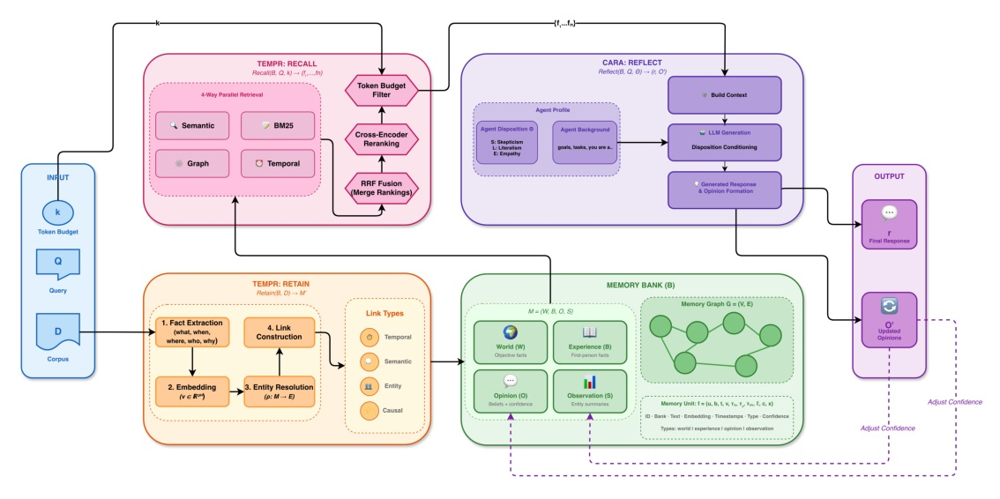
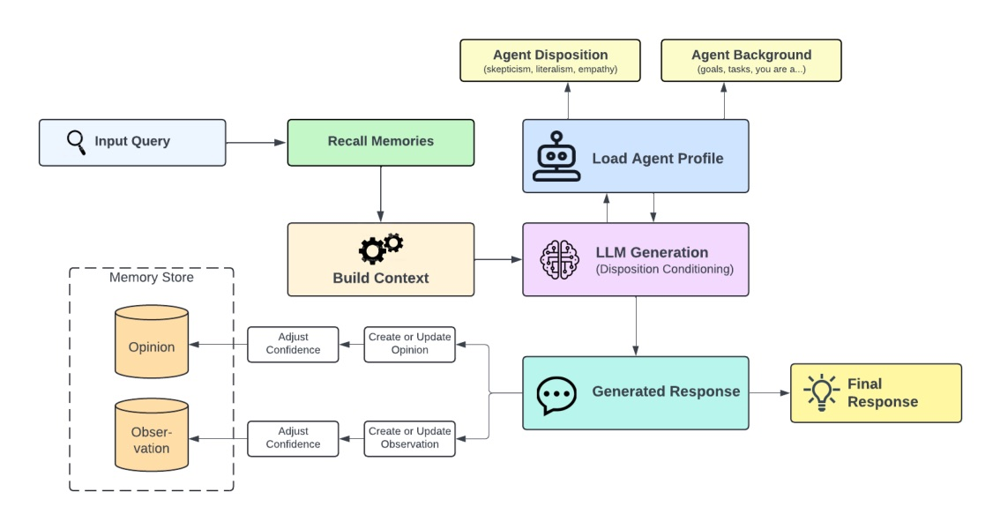

把 agent memory 從「塞回 prompt 的 snippets」變成可區分 evidence、summary 與 belief 的推理底座。
Trending 的不是一個 chatbot demo，
而是一個把「記住什麼、相信什麼、如何改變看法」拆成可追查 state 的 memory system。
四種記憶 + 三個 operations + 四路 retrieval。
Hindsight 報告在 LongMemEval 以同一 OSS-20B backbone 將 39.0% 提升到 83.6%。
| Benchmark | Conversations | Scale | What it tests |
|---|---|---|---|
| LongMemEval | varies | 115k tokens / 50 sessions (S) 1.5M / 500 (M) | IE, multi-session, temporal, update, abstain |
| LoCoMo | 50 | 304.9 turns · 9,209.2 tokens 19.3 sessions avg. | long-term conversational recall; includes images |
資料寫入、檢索、主觀更新不再是同一段 prompt 裡的隱式副作用。

因此，表面上不像 query 的紀錄，也可以沿著人、事件、時間或因果關係被找回。
| Parameter | Range | Stated behavioral effect |
|---|---|---|
| Skepticism | 1-5 | higher -> demands stronger evidence |
| Literalism | 1-5 | higher -> follows explicit wording closely |
| Empathy | 1-5 | higher -> weighs emotional/interpersonal context |
| Bias strength | 0-1 | controls profile influence on opinion formation |

報告最有說服力的機制不是「模型更大」。
同一個 OSS-20B，有 structured memory 時 LongMemEval 從 39.0% 到 83.6%。
| Configuration | Overall accuracy | Readout |
|---|---|---|
| Full-context OSS-20B | 39.0% | same base model; no Hindsight memory |
| Hindsight OSS-20B | 83.6% | +44.6 points vs same backbone |
| Hindsight OSS-120B | 89.0% | larger Hindsight stack |
| Hindsight + Gemini-3 | 91.4% | Gemini-3 answer generator |
| Question type | Full-context OSS-20B | Hindsight OSS-20B | Delta |
|---|---|---|---|
| multi-session | 21.1% | 79.7% | +58.6 pt |
| temporal reasoning | 31.6% | 79.7% | +48.1 pt |
| single-session preference | 20.0% | 66.7% | +46.7 pt |
這支持「結構化 memory 有效」的解讀；但沒有 component ablation 來量化每一個 module 的邊際貢獻。
| Method | Overall accuracy | Source qualifier |
|---|---|---|
| Memobase v0.0.37 | 75.78% | reported reference |
| Hindsight OSS-20B | 83.18% | authors result |
| Hindsight OSS-120B | 85.67% | authors result |
| Hindsight + Gemini-3 | 89.61% | authors result; Open Domain 95.12% |
“HINDSIGHT is a memory architecture for AI agents that unifies long-term factual recall with preference-conditioned reasoning.”
HINDSIGHT 把長期事實回憶與受偏好條件約束的推理，放進同一個 agent memory architecture。
“Because it is rank-based, it does not rely on raw scores being calibrated across systems.”
RRF 以排名而不是未校準的原始分數融合多個 retrieval channel。
“Token budgets for retrieval are set to
報告未填入兩個 benchmark 的 retrieval token budget；這是會影響 coverage、latency 與可重現性的缺口。
Hindsight 的可取之處，是把 evidence、retrieval 與 belief revision 拆成可實作、可審計的明確介面。